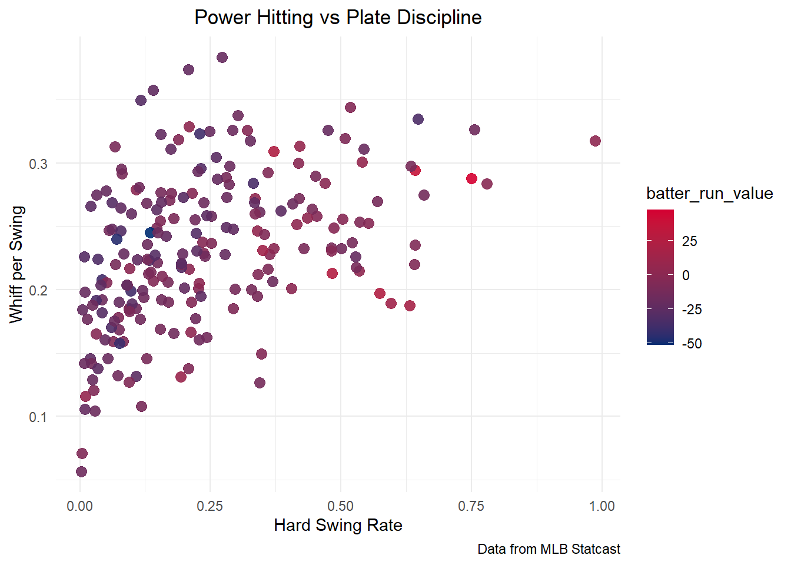
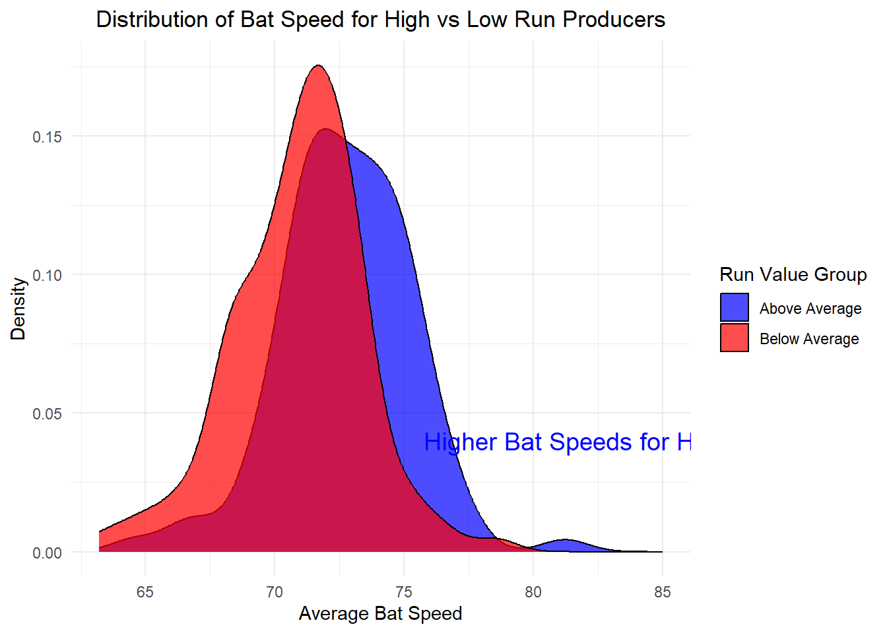
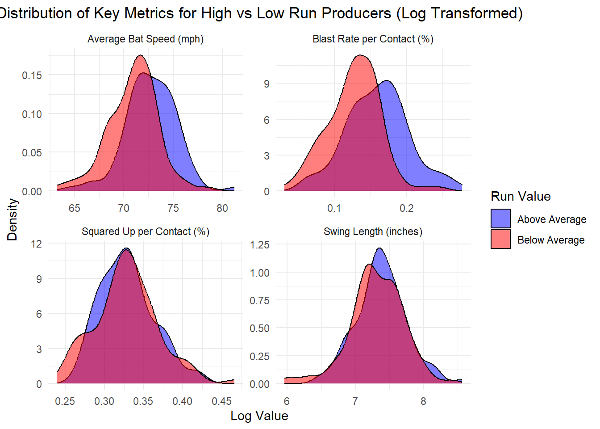
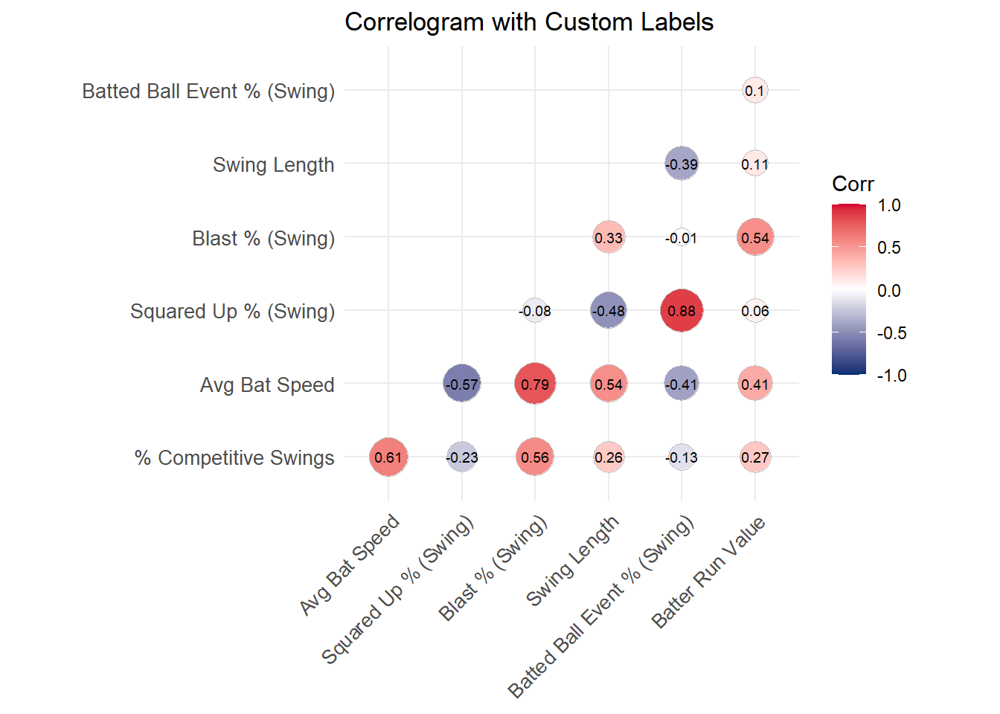
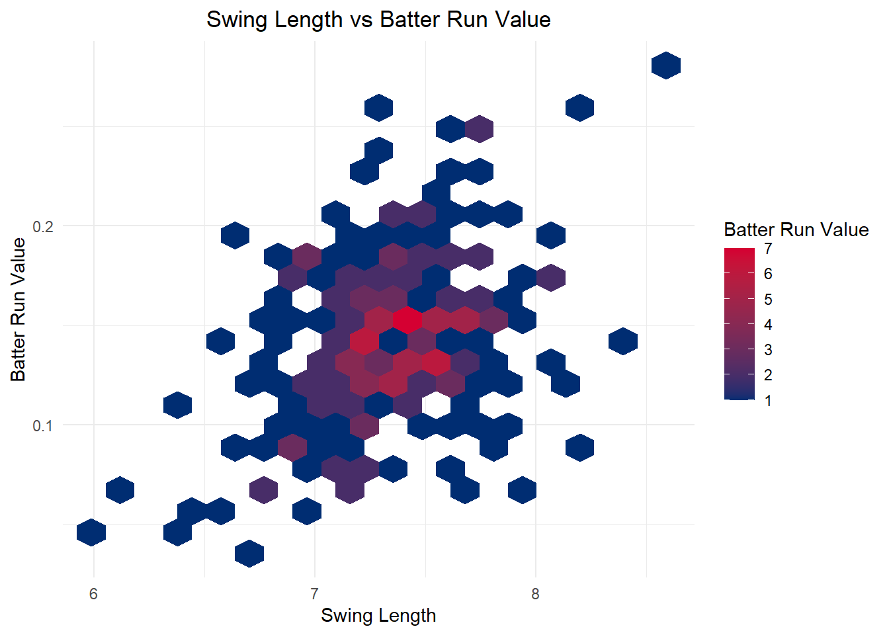

ggplot(data, aes(x=hard_swing_rate, y=whiff_per_swing, color=batter_run_value)) +geom_point(alpha=0.9, size=3) +scale_color_gradient(low=mlb_blue, high=mlb_red) +labs(title="Power Hitting vs Plate Discipline",x="Hard Swing Rate", y="Whiff per Swing",caption="Data from MLB Statcast") +theme(plot.title =element_text(hjust=0.5))

# Creating a binary label for high vs low run producers based on median run valuedata$run_value_group <-ifelse(data$batter_run_value >=mean(data$batter_run_value), "Above Average", "Below Average")# Density Plotdensity_plot <-ggplot(data, aes(x = avg_bat_speed, fill = run_value_group)) +geom_density(alpha =0.7) +scale_fill_manual(values =c("Above Average"="blue", "Below Average"="red")) +labs(title ="Distribution of Bat Speed for High vs Low Run Producers",x ="Average Bat Speed", y ="Density", fill ="Run Value Group") +theme_minimal() +theme(plot.title =element_text(hjust =0.5))# Add annotation for emphasisdensity_plot <- density_plot +annotate("text", x =85, y =0.04, label ="Higher Bat Speeds for High Run Producers", color ="blue", size =5)density_plot

Quarto enables you to weave together content and executable code into a finished document. To learn more about Quarto see https://quarto.org.
Running Code
When you click the Render button a document will be generated that includes both content and the output of embedded code. You can embed code like this:
library(tidyr)data_long <- data %>%pivot_longer(cols =c(swing_length, avg_bat_speed, squared_up_per_bat_contact, blast_per_bat_contact),names_to ="metric",values_to ="value")# Select the variables of interest for facetingcustom_labeller <-as_labeller(c(avg_bat_speed ="Average Bat Speed (mph)",swing_length ="Swing Length (inches)",squared_up_per_bat_contact ="Squared Up per Contact (%)",blast_per_bat_contact ="Blast Rate per Contact (%)"))# Facetted density plot with log-transformed variablesfacetted_density_plot <-ggplot(data_long, aes(x = value, fill = run_value_group)) +geom_density(alpha =0.5) +facet_wrap(~ metric, scales ="free", labeller = custom_labeller) +scale_fill_manual(values =c("Above Average"="blue", "Below Average"="red")) +labs(title ="Distribution of Key Metrics for High vs Low Run Producers (Log Transformed)",x ="Log Value", y ="Density", fill ="Run Value") +theme_minimal() +theme(plot.title =element_text(hjust =0.5))# Display the plotfacetted_density_plot

You can add options to executable code like this
library(ggcorrplot)library(RColorBrewer)# Assuming your dataset is stored in 'data'# Select relevant numeric columns for correlation analysis# Replace column names as needed based on your datasetnumeric_vars <- data %>%select(percent_swings_competitive, avg_bat_speed, squared_up_per_swing, blast_per_swing, swing_length, batted_ball_event_per_swing, batter_run_value)custom_labels <-c(batter_run_value ="Batter Run Value",batted_ball_event_per_swing ="Batted Ball Event % (Swing)",percent_swings_competitive ="% Competitive Swings",squared_up_per_swing ="Squared Up % (Swing)",blast_per_swing ="Blast % (Swing)",avg_bat_speed ="Avg Bat Speed",swing_length ="Swing Length")# Compute correlation matrixcor_matrix <-cor(numeric_vars, use ="complete.obs")# Create the correlogramcor_matrix_renamed <- cor_matrixcolnames(cor_matrix_renamed) <- custom_labels[colnames(cor_matrix_renamed)]rownames(cor_matrix_renamed) <- custom_labels[rownames(cor_matrix_renamed)]# Plot the correlogram using ggcorrplot with custom labelsggcorrplot(cor_matrix_renamed, method ="circle",type ="lower",outline.color ="gray",lab =TRUE,lab_size =2.5,tl.cex =10,tl.srt =45,colors =c(mlb_blue, "white", mlb_red),title ="Correlogram with Custom Labels" ) # Set a clean theme

# Hexagonal bin plothex_plot <-ggplot(data, aes(x = swing_length, y = blast_per_bat_contact)) +geom_hex(bins =20) +scale_fill_gradient(low = mlb_blue, high = mlb_red) +labs(title ="Swing Length vs Batter Run Value",x ="Swing Length", y ="Batter Run Value", fill ="Batter Run Value") +theme_minimal() +theme(legend.position ="right", plot.title =element_text(hjust =0.5))# Add annotation to emphasize relationshiphex_plot

library(ggbeeswarm)swing_violin_plot <-ggplot(data, aes(x = run_value_group, y = blast_per_swing, fill = run_value_group)) +geom_violin(trim =FALSE, alpha =0.6) +scale_fill_manual(values =c("Above Average"= mlb_red, "Below Average"= mlb_blue)) +labs(title ="Swing Length for High vs Low Run Producers",x ="Run Value Group", y ="Swing Length") +theme_minimal() +theme(plot.title =element_text(hjust =0.5))# Add annotation for emphasisswing_violin_plot +annotate("text", x =1.5, y =3, label ="Higher Run Value\nwith Longer Swings?", color ="blue", size =5)